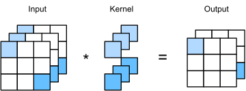
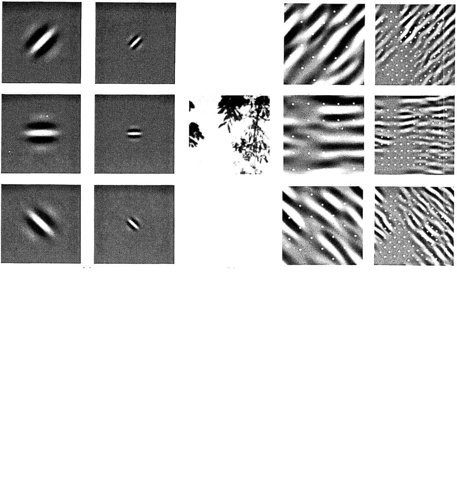
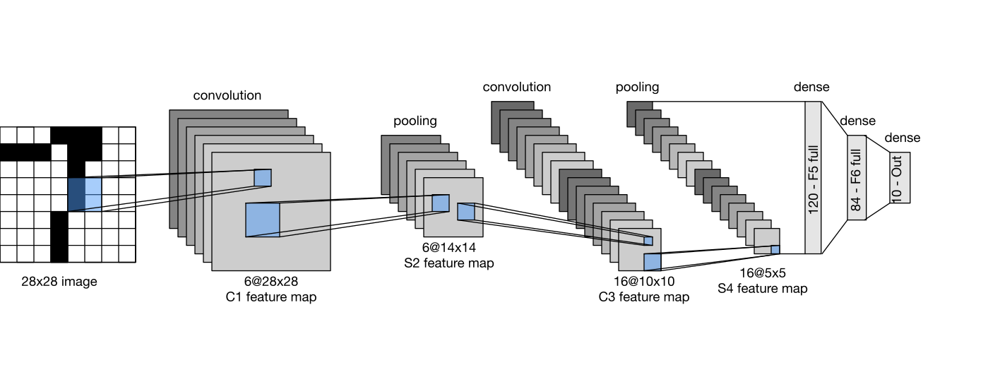
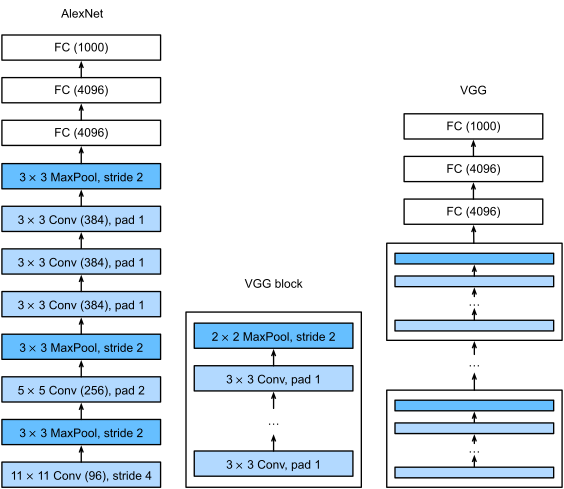
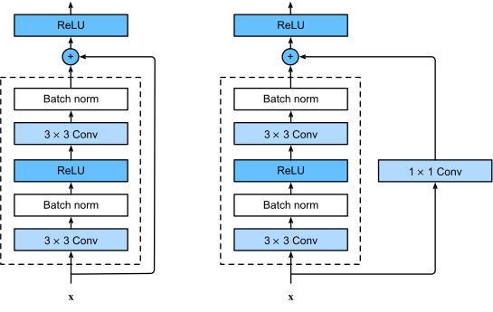
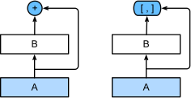
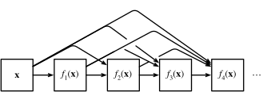

Convolutional Neural Networks
From Convolutions to ResNet
Chapters 7 & 8 — Based on "Dive into Deep Learning" by Zhang et al.
Instructor: Guðmundur Einarsson
University of Iceland
Based on slides from Hafsteinn Einarsson
Learning Objectives
- Derive the convolution operation itself as an MLP constrained by translation invariance and locality
- Master the mechanics: channels, padding, stride, and pooling — and read off output shapes from any configuration
- Trace the historical arc from LeNet through AlexNet, VGG, NiN, and GoogLeNet — each solving a limitation of the last
- Understand the two ideas that made truly deep networks trainable: Batch Normalization and residual connections
Two chapters of "Dive into Deep Learning" (Ch. 7 & 8) in one session — dense on purpose, meant to be revisited in your own reading afterward.
Part 1: From Fully Connected Layers to Convolutions
Chapter 7 — Convolutional Neural Networks
The MLP treats every pixel as an independent feature with its own weight. For images, that throws away exactly the structure that makes them images: nearby pixels are related, and the same pattern can appear anywhere.
We'll derive convolution from first principles — not as a given formula, but as the unique consequence of two reasonable design constraints on an MLP.
The Trouble with Treating Images as Vectors
Flattening a 1000×1000 pixel image into a vector of 10⁶ numbers and feeding it to a fully connected hidden layer of 1000 units requires:
$$10^6 \times 1000 = 10^9 \text{ parameters, for one layer}$$
That's billions of parameters before we've even looked at a second layer — and flattening also throws away the fact that pixel $(i,j)$ is spatially next to pixel $(i{+}1,j)$. Shuffle all the pixels the same way in every image, and an MLP wouldn't even notice.
LeNet to AlexNet: A 17-Year Gap
LeCun's convolutional network read digits on bank checks in 1995. Yet convolutional networks didn't take over computer vision until AlexNet in 2012.
What changed wasn't the core idea — it was data (ImageNet's millions of labeled images) and compute (GPUs). The architecture we derive today is the same one running in every modern vision model's early layers.
Test Your Understanding
Finding Waldo: An Invariance Challenge
Suppose we want a detector for "is Waldo here?" that scans a crowd scene patch by patch.

Waldo could be anywhere in the image. Whatever makes a patch "look like Waldo" shouldn't depend on where that patch sits — the same detector should fire wherever he appears.
Interactive: Translation Invariance
The same small detector slides across the whole image — one set of weights, reused at every position.
Two Design Principles for Vision
1. Translation Invariance
Early layers should respond to a pattern similarly regardless of where it appears in the image.
2. Locality
Early layers should focus on local regions — distant pixels shouldn't directly influence each other yet.
These aren't arbitrary simplifications — they're accurate assumptions about natural images. We'll build both directly into the MLP's weight structure.
Test Your Understanding
Constraining the MLP: Step 1, Translation Invariance
Write a fully connected layer over 2D input $\mathsf{X}$ and output $\mathsf{H}$, re-indexed by offset $(a,b)$ from position $(i,j)$:
$$[\mathsf{H}]_{i,j} = \sum_{a,b} [\mathsf{W}]_{i,j,a,b}\, [\mathsf{X}]_{i+a,j+b}$$
Translation invariance says: the weight for offset $(a,b)$ shouldn't depend on the absolute position $(i,j)$. Constrain $[\mathsf{W}]_{i,j,a,b} = [\mathsf{V}]_{a,b}$ — a single small filter, reused everywhere:
$$[\mathsf{H}]_{i,j} = \sum_{a,b} [\mathsf{V}]_{a,b}\, [\mathsf{X}]_{i+a,j+b}$$
Constraining the MLP: Step 2, Locality
Locality says: to compute $[\mathsf{H}]_{i,j}$, we shouldn't need to look far from $(i,j)$. Truncate the sum to a small window $\Delta$:
$$[\mathsf{H}]_{i,j} = \sum_{a=-\Delta}^{\Delta} \sum_{b=-\Delta}^{\Delta} [\mathsf{V}]_{a,b}\, [\mathsf{X}]_{i+a,j+b}$$
This is a convolution (technically cross-correlation, next slide). We went from a $10^{12}$-parameter constraint to a $(2\Delta+1)^2$-parameter kernel — e.g. $\Delta=5$ gives a $121$-parameter filter, reused at every position.
Interactive Convolution Demo
Test Your Understanding
Convolution vs. Cross-Correlation
True mathematical convolution flips the kernel before sliding it; cross-correlation does not:
Cross-correlation (what we compute)
$$Y_{i,j} = \sum_{a=0}^{k_h-1}\sum_{b=0}^{k_w-1} K_{a,b}\, X_{i+a, j+b}$$
True convolution
$$Y_{i,j} = \sum_{a,b} K_{-a,-b}\, X_{i+a, j+b}$$
Since the kernel $K$ is learned, whether or not we flip it makes no practical difference — the network just learns the flipped version if needed. Deep learning libraries implement cross-correlation and call it "convolution."
Interactive Cross-Correlation Calculator
Input (3×3)
Kernel (2×2)
Output (2×2)
Output size for an $n\times n$ input and $k\times k$ kernel (no padding, stride 1): $(n-k+1)\times(n-k+1)$.
Test Your Understanding
Edge Detection: Convolution in Action
A concrete kernel makes this tangible. The 1×2 kernel $K = [1, -1]$ computes a finite difference between horizontally adjacent pixels:
Output $\approx 0$ on flat regions (equal neighbors), and $\ne 0$ exactly where pixel intensity changes sharply — i.e. at a vertical edge.
Interactive Edge Detection Demo
Input Image
Kernel
Output
Learning the Kernel Instead of Designing It
We hand-picked $[1,-1]$ for edges. In practice we never do this: initialize a random kernel and let gradient descent learn it from (input, desired-output) pairs — exactly the recipe from Part 1 of this course, just applied to a kernel instead of a weight matrix.
This is the key shift CNNs make: instead of hand-engineering features (edges, corners, textures), we let the network learn which filters are useful for the task.
Test Your Understanding
Beyond Grayscale: Multiple Input Channels
A color image isn't a matrix — it's a 3rd-order tensor $\mathsf{X} \in \mathbb{R}^{c_i \times n_h \times n_w}$ (one $n_h\times n_w$ matrix per RGB channel). The kernel grows a matching dimension:

Each input channel gets its own 2D slice of the kernel; we sum the results across channels into a single output map.
Test Your Understanding
Multiple Output Channels
One kernel produces one output channel. To learn many different features — edges, textures, colors — we use many independent kernels, each producing its own output channel (feature map):
Full kernel tensor shape: $(c_o, c_i, k_h, k_w)$ — one full $(c_i, k_h, k_w)$ kernel per desired output channel $c_o$.
Interactive: Generating Feature Maps
The Surprising 1×1 Convolution
A $1\times1$ kernel has no spatial extent — it can't detect edges or textures. What's left?

It's exactly a fully connected layer applied per pixel, mixing information across channels only. Cheap way to change channel count or add nonlinearity — we'll see it become the star of the show in Network in Network (Part 2).
Test Your Understanding
Padding: Keeping the Borders
Every convolution shrinks the output: an $n\times n$ input with a $k\times k$ kernel gives $(n-k+1)\times(n-k+1)$. Stack many layers and the image vanishes. Worse, border pixels are used in far fewer output computations than central ones.
Fix: pad the input with $p$ rows/columns of zeros on each side before convolving:
$$\text{Output size} = (n_h - k_h + p_h + 1)\times(n_w - k_w + p_w + 1)$$Interactive Padding Calculator
Same vs. Valid Padding
Valid paddingNo padding added; output is smaller than input
- $p=0$
- Output smaller than input
- Used when shrinking is desired
Same paddingPadding chosen so output size equals input size
- $p = k-1$ for odd $k$
- Output size = input size
- Most common choice in practice
Odd kernel sizes (3, 5, 7) are preferred: they allow symmetric padding on both sides and give each output pixel a well-defined center pixel in its window.
Test Your Understanding
Stride: Downsampling with Convolutions
StrideThe number of pixels the kernel window moves at each step $s$ controls how far the kernel jumps at each step, instead of moving one pixel at a time:
Why stride > 1?
- Computational efficiency
- Downsamples feature maps
- Captures larger-scale structure
Combined formula
$$\left\lfloor \frac{n_h-k_h+p_h+s_h}{s_h} \right\rfloor \times \left\lfloor \frac{n_w-k_w+p_w+s_w}{s_w} \right\rfloor$$
Interactive Stride Animation
Test Your Understanding
Pooling: Robustness through Downsampling
Even with translation-invariant filters, a 1-pixel shift of the whole image shifts every feature map by 1 pixel too. Pooling summarizes a small window into one value, adding local robustness to exactly this kind of shift.
Max Pooling
Takes the maximum value in each window — keeps the strongest activation, dominant in practice.
Average Pooling
Takes the mean value in each window — smoother, but dilutes strong signals.
Interactive Demo: Pooling Operations
Pooling Also Downsamples — and Previews Part 2
Like a strided convolution, pooling shrinks spatial dimensions (its own padding/stride rules apply), but with no learned parameters — cheap and effective. Applied per-channel independently, never mixing channels.
Global Average Pooling takes this to the extreme: pool an entire $h\times w$ feature map down to a single number per channel. In Part 2 we'll see this technique eliminate fully connected layers entirely (Network in Network).
Test Your Understanding
Hierarchical Representations
Stack many convolutional layers and something powerful emerges: each layer's neurons see a larger and larger region of the original image — its receptive fieldThe region of the input image that can influence a given neuron's activation.

This mirrors the mammalian visual cortex: simple cells detect edges, complex cells combine them into shapes, further layers combine those into objects — a hierarchy CNNs learn end-to-end rather than by hand.
Interactive: Receptive Field Growth
With 3×3 kernels: layer 1 sees 3×3 pixels, layer 2 sees 5×5, layer 3 sees 7×7, layer $n$ sees $(2n{+}1)\times(2n{+}1)$ — receptive fields grow linearly with depth, without any single kernel ever getting large.
Test Your Understanding
LeNet: The First Convolutional Network
In 1998, LeCun combined everything we've derived — convolutions, pooling, and a small classifier head — into LeNet-5, trained to recognize handwritten digits for reading bank checks.
💰 Some ATMs still ran the original 1990s LeNet code decades later — a testament to how well-designed the architecture was.
Problem Context: Handwritten Digit Recognition
MNIST: 28×28 grayscale images of handwritten digits (0–9)
Challenges:
- Varying handwriting styles
- Different stroke widths
- Rotation and scaling
Traditional approaches:
- Hand-crafted features
- Template matching
- Support Vector Machines
LeNet-5 Architecture

Convolutional Encoder
- Conv (6@5×5, pad=2) → AvgPool
- Conv (16@5×5) → AvgPool
- Sigmoid activation throughout
Dense Classifier
- 3 fully connected layers
- 120 → 84 → 10 neurons
- 10-class digit output
LeNet's Legacy: The Template for Everything Since
Alternate convolution (extract features) and pooling (downsample), increase channel depth while decreasing spatial size, end with a small classifier — every architecture in Part 2 follows this same skeleton.
Swap LeNet's sigmoid for ReLU, average pooling for max pooling, and scale up the data and compute by orders of magnitude — and you get AlexNet, next.
Test Your Understanding
Part 2: Modern Convolutional Architectures
Chapter 8 — From AlexNet to ResNet
LeNet worked in 1998. It took until 2012 for CNNs to dominate computer vision. We'll trace the sequence of architectural ideas that made that leap possible — and made networks with hundreds of layers trainable.
Each architecture in this part fixes a specific limitation of the one before it — this is a story of incremental, well-motivated engineering, not one big leap.
The ImageNet Moment
Before 2012, computer vision meant hand-engineered features (SIFT, SURF, HOG) fed into a shallow classifier. ImageNet — 1.2 million labeled images across 1000 categories — created a benchmark large enough to reward learning features instead of designing them.
In 2012, a CNN (AlexNet) beat the next-best entry by more than 10 percentage points. Every winning entry since has been a CNN — until Vision Transformers, which we'll preview at the very end.
A Tour of Groundbreaking Architectures
Test Your Understanding
AlexNet: Deep Learning's Breakthrough
Architecturally, AlexNet is "a bigger, deeper LeNet": 5 convolutional layers plus 3 fully connected layers, trained on 224×224 ImageNet images across 1000 classes — about 60 million parameters, roughly 250× more than LeNet.
| LeNet (1998) | AlexNet (2012) | |
|---|---|---|
| Depth | 2 conv + 3 FC | 5 conv + 3 FC |
| Activation | Sigmoid | ReLU |
| Dataset | MNIST (60K) | ImageNet (1.2M) |
| Compute | CPU | 2 GPUs |
| Regularization | — | Dropout + data augmentation |
Learned First-Layer Filters

These edge- and color-blob detectors were learned from data via gradient descent, not hand-designed — remarkably similar to what neuroscientists find in the early visual cortex.
Test Your Understanding
AlexNet's Key Innovations
ReLU instead of Sigmoid
No saturation for $x>0$ → much faster, more stable training of a deeper network.
Dropout
Randomly zero fully connected activations during training — the same regularization idea from earlier this semester's Multilayer Perceptrons lecture, now applied at scale.
Data augmentation and GPU training (splitting the network across 2 GPUs) round out the list — together these four changes are what actually made a much bigger network trainable.
Interactive: Data Augmentation
Random crops, flips, and color jitter multiply the effective training set size for free — a cheap, powerful regularizer that's still standard practice today.
Test Your Understanding
VGG: Designing with Blocks
AlexNet's design was somewhat ad hoc. VGG's insight: stop designing individual layers — design a reusable block, then stack copies of it.
The VGG Block
- Several 3×3 convolutions (padding=1, same channel count)
- ReLU after each convolution
- One 2×2 max-pool, stride 2, at the end (halves spatial size)
Why 3×3 Convolutions?
Two stacked 3×3 convolutions cover the same 5×5 receptive field as one 5×5 convolution — but with fewer parameters ($2\times 9=18$ vs. $25$, per channel) and an extra ReLU nonlinearity in between.
This is exactly the receptive-field argument from Part 1's "Hierarchical Representations" beat, now put to deliberate architectural use.
The VGG Family

VGG-11 through VGG-19 are literally the same block, repeated a different number of times per stage. VGG showed that scaling depth uniformly and predictably — not by ad hoc redesign — reliably improves accuracy.
Test Your Understanding
Network in Network: Ditching Fully Connected Layers
VGG's fully connected classifier head holds the vast majority of its parameters (over 100 million) and is prone to overfitting. NiN asks: can we avoid FC layers entirely?
A NiN block = one regular convolution, followed by two $1\times1$ convolutions acting as a tiny per-pixel MLP — exactly the 1×1 convolution from Part 1, now used deliberately for this purpose.
Global Average Pooling Replaces the Classifier
NiN's final layer produces exactly as many channels as classes, then applies global average pooling (the technique previewed in Part 1) to collapse each channel's whole feature map to one number — the class score. No FC layer, no flattening, far fewer parameters.
NiN traded raw accuracy for a dramatically smaller, less overfit-prone model — a tradeoff that shows up again and again in the rest of this story.
Test Your Understanding
GoogLeNet: Going Wide with Inception
Which kernel size is "right" — 1×1, 3×3, 5×5? GoogLeNet's answer: stop choosing. Run several kernel sizes in parallel and let the network learn how to weigh them.
The 1×1 convolutions before the expensive 3×3/5×5 branches aren't incidental — they're a cheap dimension-reduction trick (yet another job for the 1×1 conv) that keeps the whole block computationally affordable.
Interactive: GoogLeNet Architecture
Stem (initial convs) → body of 9 stacked Inception blocks → global average pooling head (NiN's trick again) — a three-part pattern that became standard.
Test Your Understanding
Computational Cost: Comparing the Architectures
Each architecture we've seen made a different tradeoff between accuracy, parameter count, and compute:
| Architecture | Key Idea | Parameters | Where They Live |
|---|---|---|---|
| AlexNet | Scale + ReLU + Dropout | ~60M | Mostly FC layers |
| VGG-16 | Uniform 3×3 blocks | ~138M | Almost all in FC layers |
| NiN | 1×1 conv + GAP | ~8M | No FC layers at all |
| GoogLeNet | Parallel multi-scale blocks | ~7M | Spread across conv layers |
The trend across this whole story: fully connected layers are parameter-hungry and prone to overfitting; every later architecture finds a way to shrink or eliminate them, mainly via 1×1 convolutions and global average pooling.
Test Your Understanding
Batch Normalization: Stabilizing Deep Training
As networks get deeper, each layer's input distribution keeps shifting as earlier layers' weights update during training — making later layers chase a moving target. Batch Norm normalizes each layer's activations, then lets the network re-scale and re-shift them with learned parameters:
$$\text{BN}(\mathbf{x}) = \gamma \odot \frac{\mathbf{x} - \hat{\mu}_{\mathcal{B}}}{\hat{\sigma}_{\mathcal{B}}} + \beta$$
$\hat\mu_\mathcal{B}, \hat\sigma_\mathcal{B}$: mean/std over the current minibatch. $\gamma,\beta$: learned scale and shift.
BN for Convolutional Layers & Train vs. Inference
For conv layers, statistics are computed per channel, over both the batch and all spatial positions — consistent with translation invariance: every spatial position of a channel is treated as "the same feature."
At test time there's no "batch" to normalize against — BN instead uses a running average of $\mu,\sigma$ collected during training. This train/inference distinction is a common source of bugs; frameworks handle it via a model.eval() flag.
Performance Impact
Faster convergence
Larger learning rates tolerable
Mild regularization effect
Test Your Understanding
ResNet: The Degradation Problem
Common sense says a deeper network should do at least as well as a shallow one — it could just learn the identity function on its extra layers. In practice, researchers found the opposite:
Counterintuitive Observation
- A 56-layer plain network has higher training error than a 20-layer one
- Not overfitting — training error itself is worse
- It's an optimization problem: deep plain networks are hard to train, not fundamentally hard to represent well
The Fix: Learn the Residual, Not the Full Mapping
Instead of asking a block to learn a full mapping $f(\mathbf{x})$, ask it to learn the residual $g(\mathbf{x}) = f(\mathbf{x}) - \mathbf{x}$, and add the input back:
$$f(\mathbf{x}) = \mathbf{x} + g(\mathbf{x})$$
If identity really is the best choice for this block, the network just has to learn $g(\mathbf{x})=0$ — trivial for gradient descent — rather than painstakingly learning to copy $\mathbf{x}$ through nonlinear layers.
Regular vs. Bottleneck Residual Blocks

Regular Block
- Two 3×3 convolutions
- Used in ResNet-18/34
Bottleneck Block
- 1×1 → 3×3 → 1×1 convolutions
- Cheaper; used in ResNet-50/101/152
When the skip connection needs to change the channel count or spatial size, a $1\times1$ convolution on the shortcut path handles it — yet another job for our now-familiar 1×1 convolution.
Test Your Understanding
Why Skip Connections Work: The Gradient View
Recall backpropagation from earlier this semester: gradients flowing back through $L$ stacked layers are a product of $L$ Jacobians, which can vanish. In a residual block, the gradient with respect to the block's input is:
$$\frac{\partial L}{\partial \mathbf{x}} = \frac{\partial L}{\partial f(\mathbf{x})}\left(1 + \frac{\partial g(\mathbf{x})}{\partial \mathbf{x}}\right)$$
The "$1$" is a direct, unimpeded highway for the gradient — an additive term that can't vanish, no matter how small $\partial g/\partial \mathbf{x}$ gets. Stack hundreds of these blocks and gradients still reach the earliest layers.
Impact: From 152 Layers to Everywhere
ResNet won ImageNet 2015 with 152 layers — an order of magnitude deeper than VGG — and the skip-connection idea proved essential far beyond computer vision: Transformers (later in this course), and nearly every very deep network since, use residual connections as standard scaffolding.
Together with Batch Normalization, residual connections are the two ideas that took "deep learning" from networks with a handful of layers to networks with hundreds — arguably the two most consequential architectural ideas in this entire chapter.
Test Your Understanding
DenseNet: One Step Further
ResNet adds the input back: $f(\mathbf{x}) = \mathbf{x} + g(\mathbf{x})$. DenseNet instead concatenates it, and does so with the outputs of every preceding layer in the block:

Each layer receives every earlier layer's feature maps as input; a "growth rate" controls how many new channels each layer contributes, kept small since channels accumulate fast.
Dense Blocks and Transition Layers

Transition layers (a $1\times1$ conv + pooling, between dense blocks) periodically compress the ever-growing channel count back down — otherwise concatenation would explode memory use.
The Road Ahead: Beyond Convolutions
From LeNet to DenseNet, every idea here shares one assumption: convolution's translation invariance and locality are the right inductive bias for images. Vision Transformers (much later in this course) drop that assumption entirely, learning spatial relationships from data instead — at the cost of needing far more data to do it.
Both families remain in active use today — CNNs' efficiency and strong inductive bias make them hard to beat when data or compute is limited.
Test Your Understanding
Putting It All Together
From a hand-derived operation to a 152-layer network
| Architecture | Core Idea | Problem It Solved |
|---|---|---|
| Convolution | Weight-shared, local MLP | Parameter explosion on images |
| LeNet | Conv + pool + classifier | First working recipe (1998) |
| AlexNet | Scale + ReLU + Dropout | Made deep CNNs trainable at scale (2012) |
| VGG | Repeated 3×3 blocks | Systematic, predictable depth |
| NiN / GoogLeNet | 1×1 convs + GAP; parallel branches | FC-layer bloat; single-scale kernels |
| Batch Norm | Normalize activations per layer | Unstable, slow training of deep nets |
| ResNet / DenseNet | Additive / concatenated skip connections | Degradation problem in very deep nets |
Everything still to come this semester — RNNs, Transformers — reuses ideas from this chapter: skip connections, normalization, and learned rather than hand-designed feature extraction.
Key Takeaways
- Convolution isn't a given formula — it's the unique MLP consequence of translation invariance plus locality
- Channels, padding, stride, and pooling are the knobs that turn that one operation into a full feature extractor
- AlexNet → VGG → NiN → GoogLeNet each fixed a specific limitation of the last, not a wholesale redesign
- Batch Normalization and residual connections are what actually made networks with hundreds of layers trainable